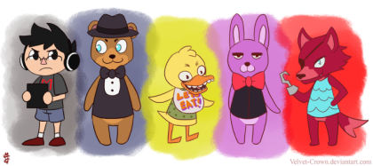

Recently Updated Pages:
Ethan (Neutralists) (11/04/2023) - Mars
Kalie (Neutralists) (12/04/2023) - Mars
Sandy (Protagonists) (18/04/2023) -Mars
Luna (Protagonists) (04/02/2021) -Eren
Tracy Added (Protagonists) (04/02/2021) -Eren
Sugar (Protagonists) (03/02/2021) -Sugar
Varine (Antagonists) (03/02/2021) -Sugar
Varine Added (Antagonists) (02/02/2021) - Eren
Gorge (Neutralists) (30/10/2020) -Sugar
Puppetmaster Plot (Plots, Complete) (31/10/2020) -Sugar
If you want to ask anything then go on the link below and it will take you to a google form. I sadly can't figure out external output on here so we'll just have to work with this. Thank you for the two people who know about this and answered it.
"make sugar the queen on all pages, he is your ruler"
First off, not a question. Second, we're co-rulers. Third, sure, if you can code it.
"Where are the Mystics that are animals related to water? Is that even allowed? Maybe they're just hiding underwater? Can I have a frog, or a squid? Maybe even a turtle!"
I'll have to check >_>, I mean there probably are and you can check if you ever come over to replay. I'll give you a talking frog that always does a peace sign. The turtles are already taken unfortantely.
Thank you :)
Why are there so many characters i mean the hecc
Ikr, I wish we could expand upon them more but unforunately we can't. And we might even have more characters in the future eee. Ty Gnome for answering
Valentine: |||
Jackson: |||
Sugar: ||
Eren: |
Jackson cause he's just that cool: |